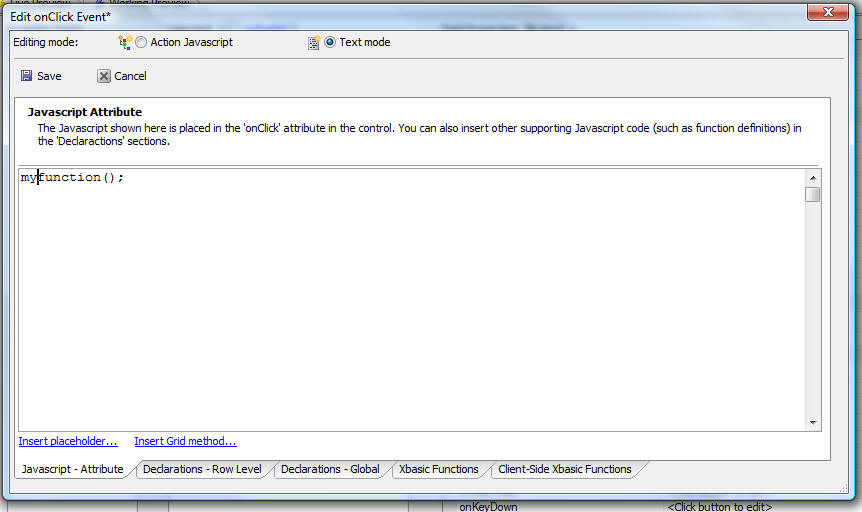
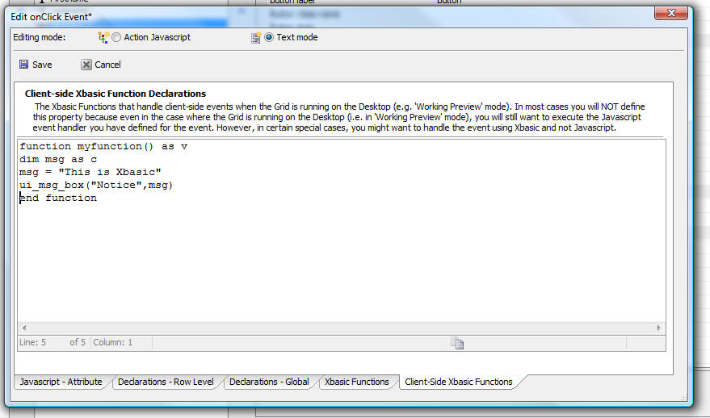

Grid Components - Desktop Applications and Working Preview - Client-side Xbasic
HTML events in a Grid (e.g. a control's onClick, onChange, onBlur, etc.) events are typically handled using Javascript functions. Now, in the case where you are using a Grid on the Desktop (which includes Working Preview mode), the function that is called to handle the event can either be defined using Javascript or Xbasic.Watch Video - Part 1
Watch Video - Part 2
If you define the function using Javascript, then the Javascript can in turn call Xbasic.
The Xbasic functions that are defined to handle these HTML events are referred to as 'client-side Xbasic' to differentiate this Xbasic from the server-side Xbasic functions that you define to handle Ajax callbacks and server-side events.
The ability to use client-side Xbasic in a Grid is an extremely powerful feature that greatly extends the utility of the Grid component when used in a Desktop application. For example, assume you have a button on a Grid and you want to use Xbasic to handle the button's onClick event. You might define the following code in the 'Javascript - Attribute' pane, added to the onClick attribute for the button. when the Grid is rendered:
<button onclick="myfunction();">Click Me</button>

Next, you need to define myfunction(). You can use either Javascript or Xbasic to define the function.
Note: Your event handler cannot call a system Xbasic function, or a UDF directly. You have to define a local client-side Xbasic function which in turn can call a system Xbasic function or a UDF.
To define myfunction() using Javascript, you would typically go to the 'Declarations - Global' tab in the above screen shot. Or, you could also go to the 'Javascript function declarations' property.
To define myfunction() using Xbasic, you would typically go to the new 'Client-Side Xbasic Functions' tab, as shown in the following screen shot:

You could also go to the 'Client-side Xbasic function declarations' property to define the client-side Xbasic function.
NOTE: You could define both an Xbasic and a Javascript version of 'myfunction()' (by defining code in both the 'Declarations - Global' tab and the 'Client-Side Xbasic Functions' tab). However this is not recommended because when the Grid is running on the Desktop you will have no control over which function (i.e. the Javascript version or the Xbasic version) gets executed.